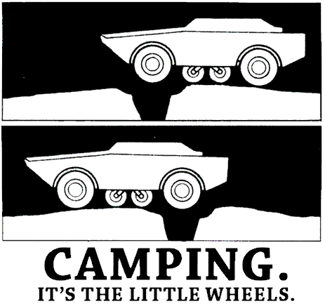

Latest news: Camping 2.1!
Camping is a small web framework, less than 4k, a little white blood cell in the vein of Rails. See it for yourself. Most camping apps are just one single file, packed full of Vitamins MVC and b12. A pocket full of tricks to free you of the globally namespaced doom of Sinatra, and the complexity of Rails. Camping and Rails are good friends though, so you can be sure if you ever outgrow your tent, Rails will help make your app the Next Big Thing™.

Camping is the little wheels. Camping isn't serious business, but it's powerful and faster than most of the competition. Camping is for hackers and tricksters parasailing off the edge of the earth. Camping is because programming isn't for commerce. Camping is for creation and mischief. Camping is a toy. Camping isn't a best practice. Here's a blog:
Camping.goes :Blog module Blog::Models class Post < Base; end end module Blog::Controllers class Index def get @posts = Post.all render :index end end end module Blog::Views def index @posts.each do |post| h1 post.title div.content! { post.body } end end end
Alright! There are as many as a dozen people idling on IRC right now! We also have a pretty funky Mailing List full of helpful critters.
Installation: If you have RubyGems, gem install camping. This guide will help if you'd like to use even newer versions, or have any trouble installing.
The Camping Book: A nifty little pocket full of tricks.
Rules of Thumb: All about thumbs.
Philosophy: A peek inside the brains of some of the most renowned campers. Quickly: Camping is all about having fun and exploring, and while it is blazingly fast and certainly useful for Serious Business™, our goals are not to take over the worlds of commerce and business.
Upgrading: For the old timey campers, a little guide to the newest gizmos.
Contributing: For those with a funky keen idea, who'd like to get their hands dirty with some pure, organic, ruby code.
Issues: We also have a bug tracker where you can see all of the known (and resolved) bugs and feature requests at the moment. If you have a very specific problem, it might be a good idea to see if it's been reported before. If not, you might open a new issue or maybe ask the the mailing list.
Source Code: The source code of Camping is available freely under the MIT licence, which pretty much give you permission to do anything you want with it.